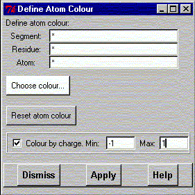
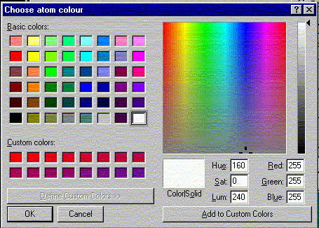

**************************************************************************
Select atom colour widget
Leif Laaksonen CSC 1996
**************************************************************************
Select atom colour by defining the atoms and click the "Choose colour" button to show the colour editor.
If the atom partial charges have been defined it's also possible to colour the atoms according to the partial charges. Define the partial atom charge range and press the "Apply" button. The colour range is blue for the lower limit and red for the upper and the colour goes through green.

Pick or choose the colour using the colour editor and press the "Ok" button. Then press the "Apply" button to colour the selected atoms with the picked colour. The new colour will not be sen before the scene is redrawn.

Line command: see atom command
**************************************************************************
LUL/1996
**************************************************************************